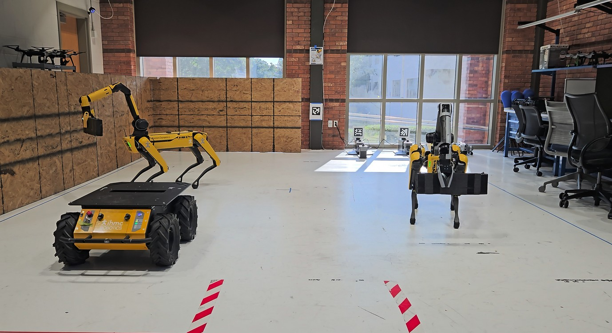
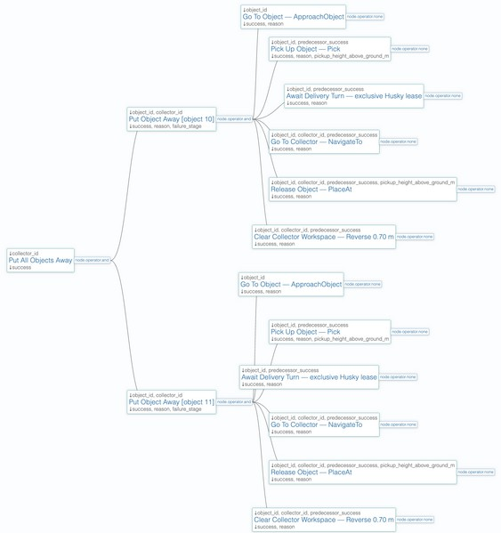

Collaborative autonomy
Multi-agent robotics at IHMC
Within my supervisor’s overall architecture, I designed subsystem interfaces and implemented a distributed Rust/Python autonomy framework for heterogeneous robot teams. It integrates IHMC-developed Joint Activity Graphs, capability-based task allocation, Zenoh communications, and platform-specific robot adapters, with runtime checks between team decisions and execution.
Integrated Bevy/Avian simulation, motion capture, geofencing, command validation, and runtime supervision. I addressed motion-capture communications and coordinate-frame inconsistencies, and used global localization for coarse Spot alignment with onboard visual feedback for final grasping. More than a dozen hardware trials tested coordinated collection and delivery with two Spot robots and an operator-operated Husky, including task continuation after an abort.
About IHMC Robotics NCCA summer internship wrap-up
